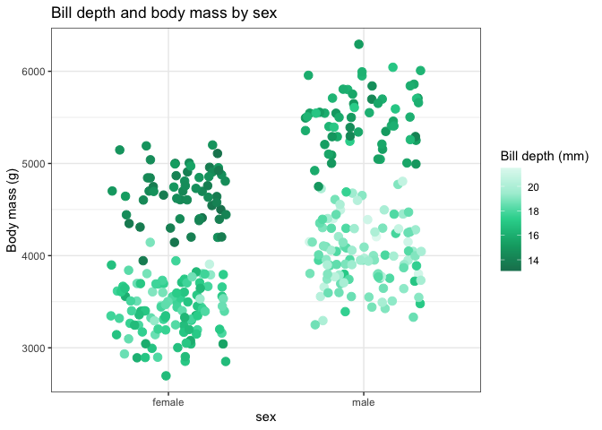
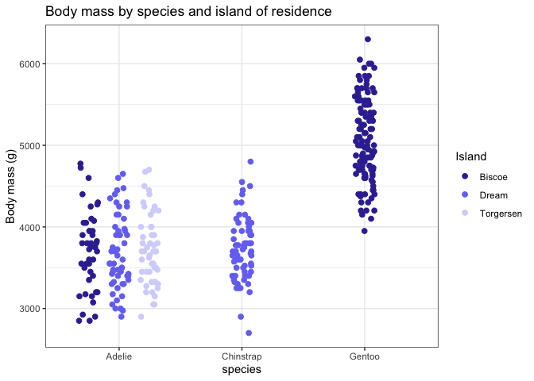

Thematic Twist Bioscience color palettes for ggplot2 By Patrick Cherry
Brief Description
The R package twistcolorpal provides the ggplot2 functions scale_color_twist and scale_fill_twist to automatically and flexibly add Twist Bioscience brand colors to plots.
green_ngs_palette();
#> NGS Green UI Green Twist Green Soft Green Light Green
#> "#19805e" "#04A973" "#2AD39B" "#AAEED7" "#E1F9F1"
scales::show_col(green_ngs_palette(), cex_label = 1)
Installation
Use devtools or remotes to install from Twist Bioscience’s private github. Twist’s Github is private, so use the Personal access tokens page to generate an access token and paste it in between the quotes of auth_token = "" in the install_github() command.
if (!require(devtools)) install.packages("devtools")
devtools::install_github("Twistbioscience/twist-color-pal", auth_token = "")Alternative installation
Alternatively, download the package zip and use devtools to install from the local .zip.
if (!require(devtools)) install.packages("devtools")
devtools::install_local(path = "~/Downloads/twist-color-pal.zip")Examples
Plots with generic data
penguins %>%
filter(!is.na(sex)) %>%
ggplot(aes(x = sex, y = body_mass_g, color = bill_depth_mm)) +
geom_jitter(size = 3, width = 0.3) +
scale_color_twist(discrete = FALSE) +
labs(title = "Bill depth and body mass by sex",
y = "Body mass (g)",
color = "Bill depth (mm)")
penguins %>%
filter(!is.na(body_mass_g)) %>%
ggplot(aes(x = species, y = body_mass_g, color = island)) +
geom_point(size = 2,
position = position_jitterdodge(jitter.width = 0.4)) +
scale_color_twist(palette = "purple_genes") +
labs(title = "Body mass by species and island of residence",
y = "Body mass (g)",
color = "Island")
penguins %>%
ggplot(aes(x = year, fill = species)) +
geom_bar(position = position_dodge()) +
scale_fill_twist(palette = "pink_biopharma") +
labs(title = "Number of observations for each species by year")
The Palettes
names(twist_palettes)
#> [1] "green_ngs" "grays" "blue_oligo_pools"
#> [4] "purple_genes" "pink_biopharma" "orange_variant_library"
#> [7] "golds"
grays_palette();
#> Black Primary Slate UI Slate Medium Gray Light Gray
#> "#0F0F10" "#232E35" "#354652" "#98A8B3" "#E0E5EB"
scales::show_col(green_ngs_palette(), cex_label = 1)
blue_oligo_pools_palette();
#> Deep Teal Teal Oligo Blue Sky Teal Light Blue
#> "#144348" "#2A8E97" "#57C6D0" "#A7E1E6" "#E7F7F8"
scales::show_col(blue_oligo_pools_palette(), cex_label = 1)
purple_genes_palette();
#> Sea Purple Violet Genes Purple Lilac Light Purple
#> "#3A30A1" "#4A3FC6" "#7676F3" "#A6A6F7" "#D5D5FB"
scales::show_col(purple_genes_palette(), cex_label = 1)
pink_biopharma_palette();
#> Fierce Magenta Magenta Biopharma Pink Rose Light Pink
#> "#8911B1" "#AD15E0" "#CF6AF1" "#E5B0F8" "#F9ECFD"
scales::show_col(pink_biopharma_palette(), cex_label = 1)
orange_variant_library_palette();
#> Burnt Orange Deep Orange Orange Libraries Orange
#> "#8C4608" "#BD5F0A" "#ED770D" "#F49138"
#> Pale Citrus
#> "#F9C79A"
scales::show_col(orange_variant_library_palette(), cex_label = 1)
golds_palette();
#> Gold1 Gold2 Data Yellow Yellow Light Yellow
#> "#8E6706" "#BE8A09" "#EFAD0B" "#F6BF37" "#FBE6B1"
scales::show_col(golds_palette(), cex_label = 1)Questions? Concerns? Contact Patrick at pcherry@twistbioscience.com. Did you use these to make nice plots? Did you present them? Let me know; I’d love to hear. <3